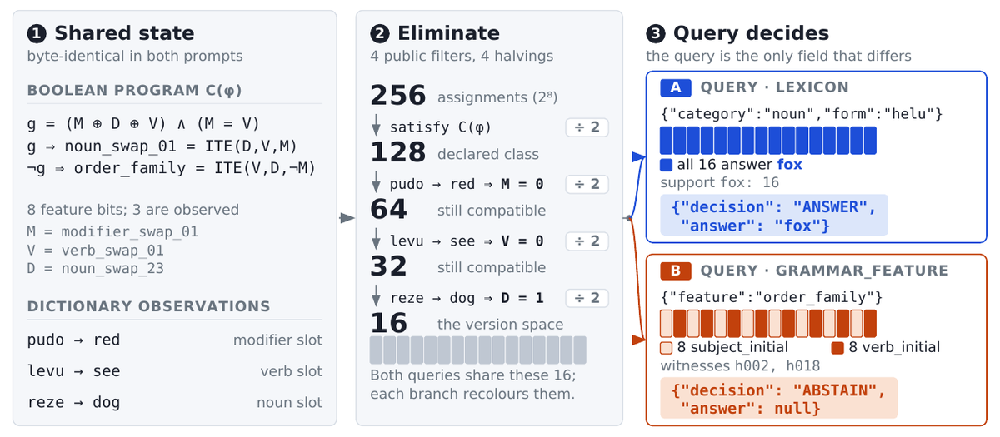
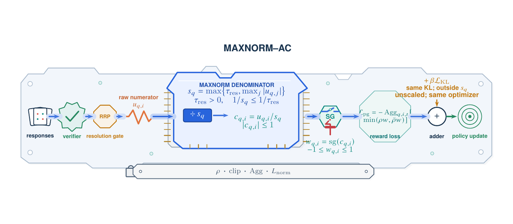
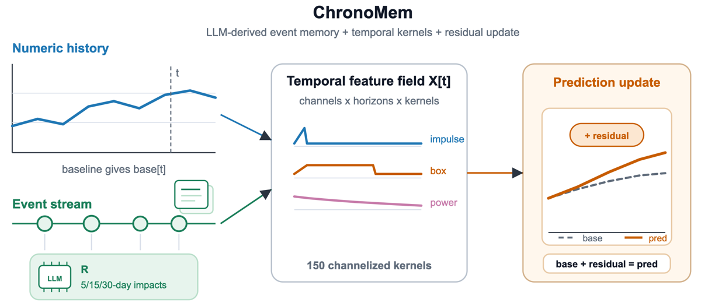
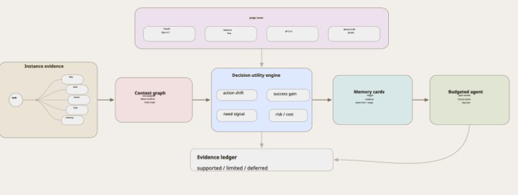

AutoResearch
Closed-loop agents for scientific discovery.
I research and build reliable AI agents that can reason, learn from feedback, and turn research ideas into systems that work in the real world.
At Alibaba, my current work focuses on AI agent research, spanning AutoResearch, post-training, agentic reinforcement learning, and applied Xianyu AI systems. I am especially interested in closed-loop research agents, stable reasoning objectives, and high-quality data systems for foundation models.
Before Alibaba, I contributed to foundation-model development at Tencent and Baidu. At Tencent, I worked on the Hunyuan Foundation Model, focusing on mathematical and biological capability enhancement, pre-training data, multilingual capability improvement, and Yuanbao AI Search. At Baidu, I contributed to multilingual capability enhancement for the ERNIE Bot 5 (EB5) Foundation Model.
Earlier, at the Chinese Academy of Sciences, I conducted research on knowledge graphs and LLM-based security.
I am always happy to connect and collaborate on ambitious research problems. Feel free to reach out by email or visit my Google Scholar.
I study how agents can research, learn, and act reliably, connecting these directions with applied Xianyu AI workflows.
Closed-loop agents for scientific discovery.
Data and alignment for stronger reasoning.
Reliable reinforcement learning for tool-using agents.

Submitted
Evaluates whether an unseen-language task is identifiable by constructing same-state counterfactual queries with provably different correct actions.
In Preparation
Frames KL failures as a token-level gradient-contract problem and proposes ZCPO to enforce zero-sum shared-prefix gradients.

Submitted
Diagnoses calibration imbalance under low-variance rewards and introduces bounded recovery for credible small reward gaps.

In Preparation
Uses LLMs to structure external events as an interpretable residual memory rather than directly forecasting numerical values.

Preprint
Introduces CICL, a decision-aware context layer that selects evidence by its expected effect on an agent's next action.

Preprint
Presents a pattern-matching approach based on Ukkonen's construction for efficient text search.

Published
Introduces a basket-enhanced heterogeneous hypergraph for price-sensitive next-basket recommendation. arXiv
Feb 2026 — Present
AI Agent Researcher
AI Agent research spanning AutoResearch, post-training, agentic RL, and applied Xianyu AI systems.
Oct — Dec 2025
Senior Research Scientist
DAPO-based post-training and alignment for EB5 on PaddlePaddle.
Mar 2025 — Sep 2025
Research Scientist
Yuanbao AI Search with NeuroBERT-pro and GATv2Conv.
Feb 2024 — Mar 2025
Research Scientist
Mathematical and biological capability enhancement, video processing, data recognition, and audio alignment.
Nov 2023 — Jan 2024
Research Assistant Intern
Fine-tuned LLM approaches for insider-threat detection and structured knowledge-graph construction.
May 2021 — May 2022
Software Engineer
Frontend architecture and production systems for international social products.
Nov 2023 — Feb 2024
Reformulated classification tasks as question-answering with structured prompts and parameter-efficient tuning of about 0.01% of parameters on CERT 4.2. AUC reached 0.9923, Recall 98.83%, training time was 30% lower, and compute was over 50% lower.
Jun 2023 — Oct 2023
Collaboration with Prof. David Manlove. Evaluated seven algorithms on a 1M+ NLTK corpus and proposed a suffix tree with Ukkonen construction: 5.2× speedup, 3B-character gene search 40% faster, and about 5× at 20M characters with 100% match coverage.
Jan 2023 — Jun 2023
Applied feature-selection methods to 5,000 samples: KNN improved 69.4% → 77.8%, and SVM reached 94.4%.
Nov 2022 — Jan 2023
Applied BERT-based augmentation to around 25% of the dataset and evaluated KMeans, Louvain, PCA, and UMAP.
Aug 2023 — Oct 2023
Enhanced Llama 2 7B with fine-tuning, retrieval-augmented generation, and domain-knowledge injection.
Sep 2022 — Dec 2023
MSc in Computer Science
GPA 3.67 / 4.0 · USNews Rank #62
Research collaboration with Prof. David Manlove, University of Glasgow professor and University of Oxford graduate.
Sep 2016 — Jun 2020
BEng in Software Engineering